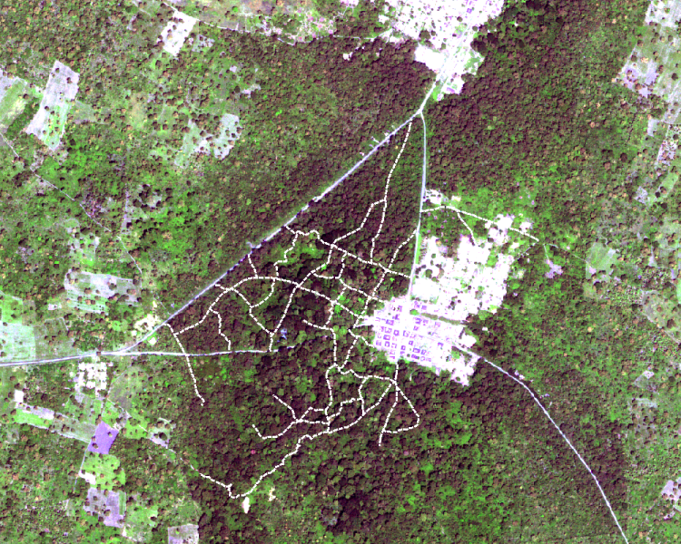
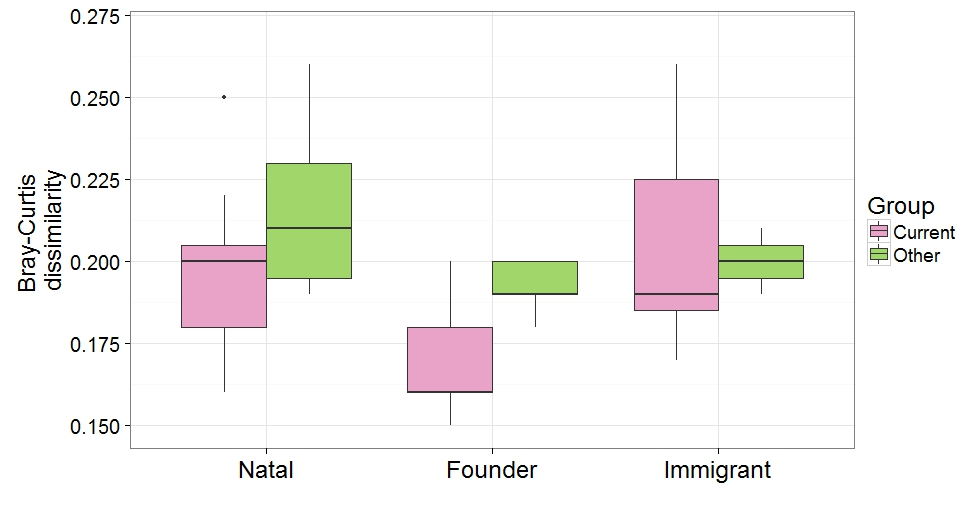
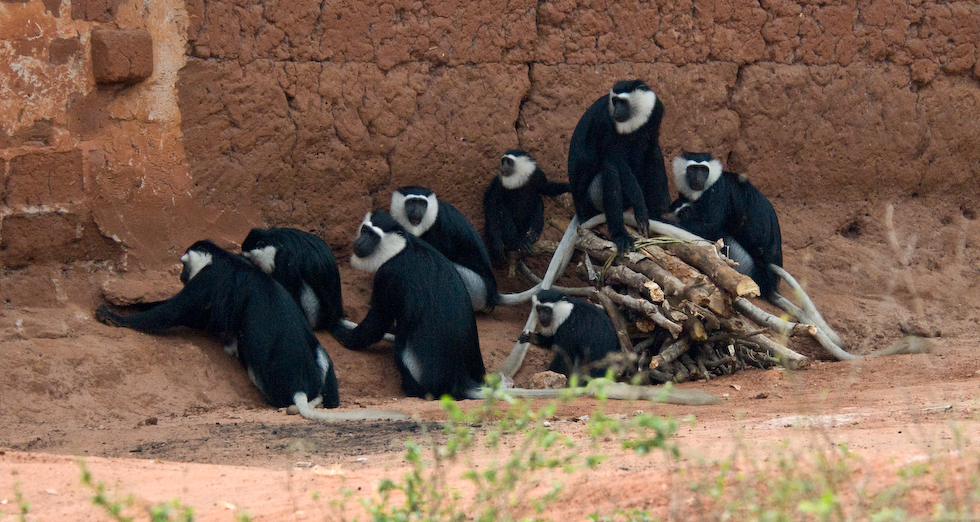
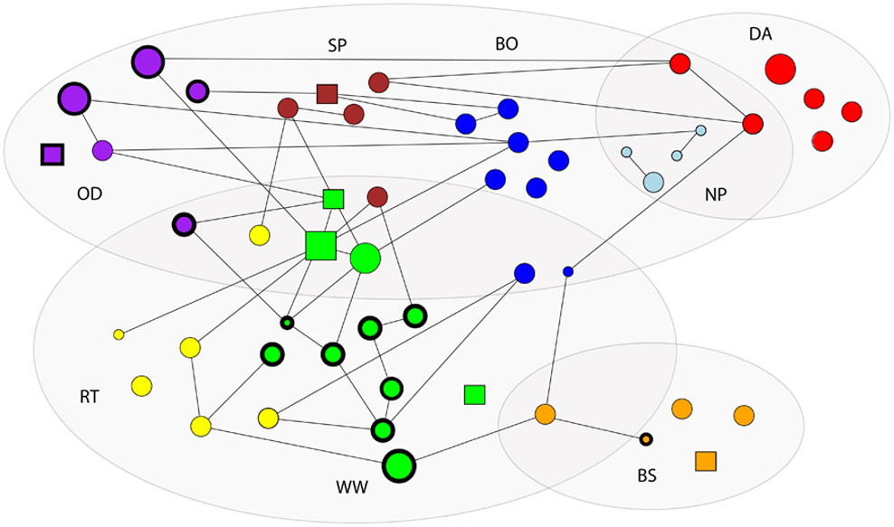

Boabeng-Fiema and its colobus population
This eco-tourism site is located close to the villages Boabeng and Fiema in central Ghana, West Africa. The monkeys here are protected by traditional taboos and more recent laws, and this site contains one of few remaining large populations of white-thighed colobus. Boabeng-Fiema is a relatively large forest fragment that is connected to other smaller fragments via narrow forest corridors. This area consists of a mosaic of different habitat types, such as primary forest, derived savanna, disturbed forest, riverine forest, and recently abandoned farm land. The habitat mosaic offers an excellent opportunity to investigate how ecological factors affect dispersal patterns and social relationships. I investigate this topic using a combination of behavioral, ecological, and genetic data collection and data analysis techniques. For my doctoral project, I collected data during 25 months at Boabeng-Fiema, under the supervision of Dr. Pascale Sicotte at the University of Calgary. I also spent one year genotyping DNA samples in Dr. Nelson Ting's laboratory. I continue to collaborate with Drs. Sicotte and Tig on topics related to the gut microbiome, genetic structure, social structure, and infant development.
The gut microbiome
Although the gut microbiome is linked to host health, no study to date has described a link between the gut microbiome and differential rates of reproduction. As a matter of fact, most previous microbiome analyses of wild primates lacked contextual information. My study combines several years of detailed ecological data, behavioral observations, and fecal DNA samples from several study groups with known differences in ecological and social factors. There is a strong seasonal effect on the gut microbial composition. Groups have distinct gut microbiomes, partly due to differential habitat use. Natal and founder females, but not immigrant females, have similar microbiomes to other group members (Wikberg et al. 2016). High-ranking females with diverse gut microbiomes have the highest reproductive output. This finding leaves open the possibility that a diverse microbiome helps allocate resources to reproduction, but future analyses are necessary to establish the cause-and-effect relationship.
Long-term changes in social structure
The colobus population at Boabeng Fiema has increased rapidly during the last ten years. This increase in population density has been accompanied by increased rates of within-group and between-group female-female aggression while male-male aggression has remained stable. We suspect that this increase in female aggression is due to decreased per capita food abundance. I am currently investigating whether or not this is the case in collaboration with Dr. Pascale Sicotte and Dr. Tania Saj at the University of Calgary, Dr. Julie Teichroeb at the University of Toronto, and Dr. Andrew MacIntosh at Kyoto University.
Dispersal patterns
I use a combindation of demographic and genetic data to gain a more complete understanding of male and female dispersal patterns in the white-thighed colobus population at Boabeng-Fiema. All males disperse from their groups, most likely to increase their reproductive opportunities (Teichroeb et al. 2011). Approximately half of the females disperse while the other half remain in their natal group to breed (Wikberg et al. 2012). Females transfer from large groups with frequent female-female aggression to smaller groups (Teichroeb et al. 2009). Many females emigrate from the main fragment with high population density, and they may settle in the surrounding fragments with lower population density and habitat quality.
Feeding competition

Colobus monkeys are highly folivorous, and leaves are often assumed not to be worth fighting over due to a widespread distribution and a relatively low nutritional quality. Although female colobus only occasionally displace other group members for access to food, they form linear dominance hierarchies that are either weakly or strongly expressed (Wikberg et al. 2013). The colobus occasionally feed on contestable food items such as seed pods and palm nuts that may provide sufficient incentive to maintain decided dominance relationships. Females in the primary forest show aggression during between-group encounters at higher rates than females in the savanna. Females are more likely to show aggression when the encounter occurs in the core area of their home range (Wikberg & Sicotte 2010). Furthermore, females that frequently participate together in between-group encounters form stronger grooming relationships than others. These results indicate that forming strong bonds facilitates cooperative home range defense, which is one of the main predictions for why females should remain in their natal group and form strong bonds with female kin.
Social relationships

In many wild mammals, females remain in their natal group and form strong, long-lasting bonds with their mother and other maternal kin. It is still under debate whether or not this pattern evolved due to indirect fitness benefits gained from interacting with kin or due to direct fitness benefits gained from interacting with familiar individuals. Because of the flexible dispersal pattern in the colobus females at Boabeng-Fiema, females reside with familiar and unfamiliar kin and non-kin. This offers a unique opportunity to tease apart the effect that familiarity and kinship have on social bonds. Females groom familar female kin more often than other group members, and they do not bias affiliation towards recent immigrant kin (Wikberg et al. 2014a) . As a result, kinship has a positive effect on the social network in groups that consist of long-term residents while immigration status is more important in shaping the social networks in groups with recent immigrants (Wikberg et al. 2014b). Surprisingly, between-group differences in social network metrics were not predicted by the kin composition of groups but by other demographic factors like the presence of infants and group stability (Wikberg et al. 2015).